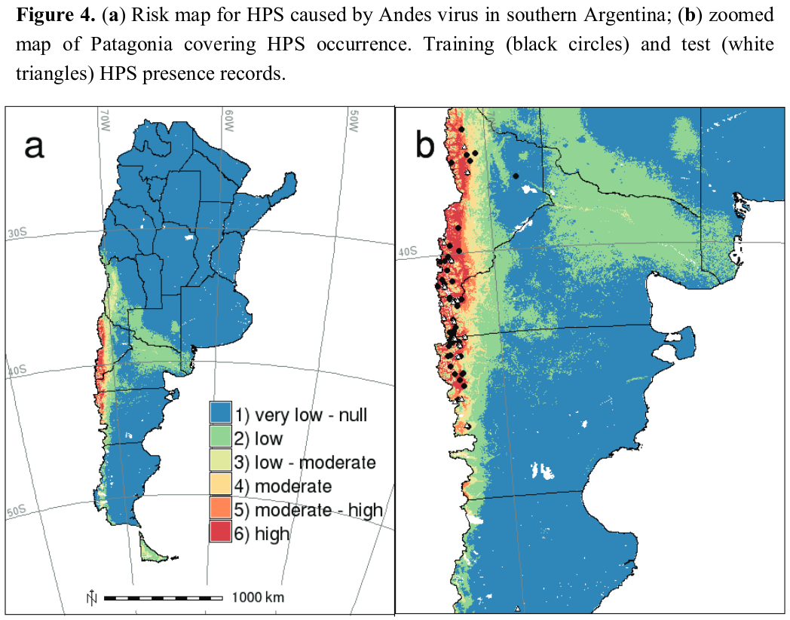
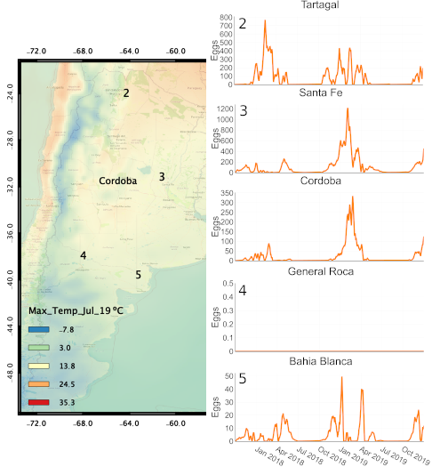
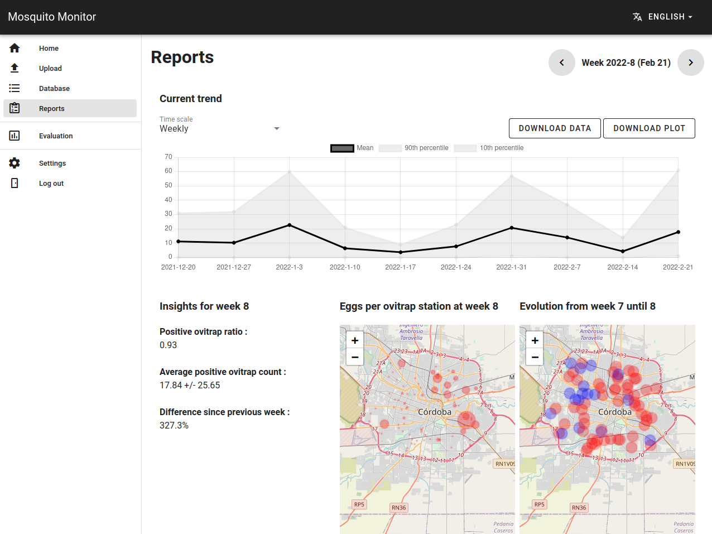

Environmental drivers of vector-borne and zoonotic diseases
Leveraging remote sensing for Public Health
You all have seen this, right?


Disease Ecology I

The main objective is to understand the influence of environmental factors and to predict when and where a disease is most likely to occur
decision making, planning of prevention, management or response actions, etc.
Disease Ecology II


What about remote sensing?

Relationship among different RS resolutions
Remote sensing & scale I

How can we use RS? I

General approach used in disease ecology
Time series analysis of satellite products
- MODIS LST temporal and spatial reconstruction
- Detection of spatial and temporal clusters of favorable conditions for the occurrence of West Nile Fever cases in Greece


SDM & GIS based approach for HPS risk map


Distribution of temporal patterns
- Temporal and spatial patterns in Aedes aegypty in Córdoba
- Association with variables derived from S2 imagery analysis to predict temporal patterns over the whole city.

Mosquitoes: Predictive system based on population dynamics and weather forecasting models


App to count mosquito eggs in ovitraps pics
https://ovitrap-monitor.netlify.app/


Themes
10 Built-in Themes (or create your own)


Easy Navigation
Quickly jump to other parts of your presentation

Toggle the slide menu with the menu button (bottom left of slide) to go to other slides and access presentation tools.
You can also press m to toggle the menu open and closed.
Chalkboard
Free form drawing and slide annotations

Use the chalkboard button at the bottom left of the slide to toggle the chalkboard.

Use the notes canvas button at the bottom left of the slide to toggle drawing on top of the current slide.
You can also press b to toggle the chalkboard or c to toggle the notes canvas.